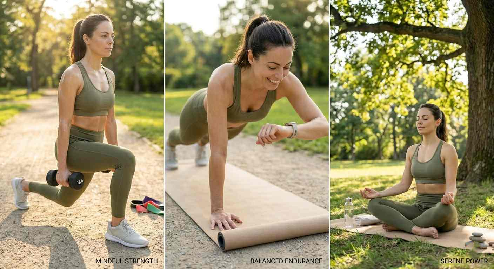

Complete Fitness Guide: Strength, Endurance & Flexibility

Fitness is an important part of a healthy lifestyle. It is not only about appearance or building muscles. True fitness means having a strong body, good stamina, and flexible movement that allows you to perform daily activities easily.
Health experts explain that a balanced fitness routine should include three important elements: strength training, endurance training, and flexibility exercises. These three components work together to improve overall physical health.
• Strength Training - builds muscles and stronger bones
• Endurance Training - improves heart and lung function
• Flexibility Exercises - allows joints to move freely and reduces injury risk
When these three areas are trained regularly, the body becomes stronger, more energetic, and more resistant to disease. A balanced exercise routine is therefore one of the most effective ways to support long-term health and physical performance.
What is Physical Fitness?
Physical fitness refers to the ability of the body to perform daily activities efficiently without excessive fatigue. A physically fit person has strong muscles, good endurance, flexibility, and a healthy heart.
Regular exercise improves body strength, increases energy levels, and reduces the risk of many chronic diseases such as heart disease, diabetes, and obesity.
According to the World Health Organization (WHO), adults should perform at least 150 minutes of moderate physical activity each week to stay healthy.
Main Components of Fitness
Fitness consists of several important components that help the body function properly:
- Cardiovascular endurance
- Muscular strength
- Muscular endurance
- Flexibility
- Body composition
These components work together to improve overall physical health and performance.
Strength Training: Building Your Foundation
Strength training focuses on developing muscle power and improving the body's ability to perform physical tasks. Exercises such as weightlifting and resistance training stimulate muscle fibers and encourage muscle growth.
When muscles become stronger, the body is better able to lift objects, maintain balance, and support the skeleton. Strength training also helps increase bone density, which reduces the risk of bone weakness later in life.
• Push-ups
• Squats
• Planks
• Lunges
• Bodyweight exercises (no equipment needed!)
Regular strength exercises also improve metabolism. A higher muscle mass helps the body burn more calories even while resting. Because of these benefits, strength training is recommended for both beginners and experienced athletes. Strength training is recommended at least two times per week according to fitness guidelines from the American College of Sports Medicine.
Endurance Training: Tuning Your Internal Engine
Endurance training focuses on improving the ability of the heart, lungs, and muscles to work for long periods of time. This type of training is often called cardiovascular exercise.
Activities such as running, jogging, swimming, cycling, and brisk walking increase the heart rate and improve blood circulation. As a result, oxygen is delivered more efficiently to muscles and organs.
• Walking (underrated but amazing!)
• Running or Jogging
• Cycling
• Jumping jacks
• Jump rope
Improved endurance allows a person to perform daily tasks with less fatigue. It also plays an important role in maintaining heart health and reducing the risk of cardiovascular diseases. Many health organizations recommend performing moderate aerobic exercise several times each week in order to maintain good cardiovascular fitness.
Regular cardio exercise helps reduce the risk of heart disease and improves lung capacity. According to the Centers for Disease Control and Prevention (CDC), regular exercise also improves brain function and overall quality of life.
Flexibility: The Secret to Pain-Free Movement
Flexibility refers to the ability of muscles and joints to move through a full range of motion. Flexible muscles allow the body to move smoothly and reduce stiffness during physical activity.
Exercises such as stretching, yoga, and mobility training help maintain flexibility. These movements improve joint health and reduce the likelihood of muscle strain or injury.
• Yoga
• Hamstring stretch
• Shoulder stretch
• Neck stretch
• Dynamic stretching before workout
Flexibility training is especially important for people who spend long hours sitting. Regular stretching can help improve posture, relieve muscle tension, and support better body alignment. By combining flexibility exercises with strength and endurance training, individuals can maintain balanced physical fitness and healthier movement patterns.
Warm-Up and Cool Down
A warm-up prepares the body for physical activity. It increases blood flow to muscles and reduces the risk of injury. Experts recommend warming up for about 5–10 minutes before starting a workout.
Examples of warm-up exercises:
- Light jogging
- Jumping jacks
- Arm circles
- Dynamic stretching
Cooling down after exercise allows the body to return to its normal state gradually. It prevents dizziness and helps muscles recover. Light stretching and slow walking for a few minutes are good cool-down activities.
Simple Beginner Workout Plan
Beginners can follow a simple weekly workout routine:
- Day 1: Push-ups, Squats, Plank
- Day 2: Walking or Cycling (30 minutes)
- Day 3: Stretching or Yoga (20 minutes)
- Day 4: Rest
- Day 5: Light strength training + walking
- Day 6: Active rest (light activities)
- Day 7: Rest
This routine helps the body gradually adapt to physical activity.
Common Workout Mistakes to Avoid
Many beginners make mistakes when starting a fitness journey. Avoiding these mistakes can improve results and reduce injuries.
- Skipping warm-up
- Using incorrect exercise form
- Overtraining without rest
- Ignoring proper hydration
- Comparing yourself to others
The Longevity Pillar: Power, Stamina & Range
Physical fitness plays a major role in long-term health and quality of life. A healthy body allows individuals to remain active, independent, and energetic even as they grow older.
Modern lifestyles often involve long periods of sitting and reduced physical activity. This sedentary behavior can weaken muscles, reduce endurance, and limit joint mobility. Regular exercise helps counter these effects and restore the body's natural movement abilities.
Functional power allows the body to lift, carry, and react quickly when needed. Aerobic capacity ensures that the heart and lungs supply enough oxygen to the body during activity. Structural mobility allows joints to move smoothly and without pain.
By maintaining all three of these fitness pillars, individuals can improve physical performance and support long-term health and wellbeing.
My Final Advice
I used to think I wasn't "fit enough" to exercise. That's backwards. You exercise to become fit. You don't need to be fit to start.
Start small. Walk for 10 minutes today. Do 5 squats. Stretch for 2 minutes. That's enough. Tomorrow, do a little more. Over time, it adds up.
You don't need a gym. You don't need equipment. You just need to start. Your body will thank you.
Have questions about starting a fitness routine? Contact me here. I've been where you are.
Continue Reading:
→ Complete Beginner Fitness Guide
→ I Used to Quit Everything. Here's How I Finally Stopped.
→ Calculate Your Body Fat Percentage